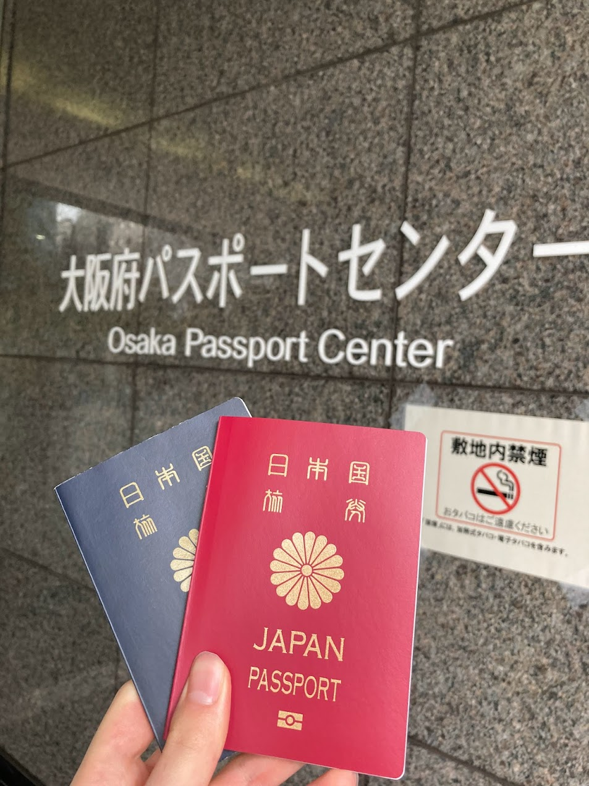

大阪散歩
9月 2021
カテゴリー：サークル長の自主練
皆さんこんにちは。今回は大阪へ散歩しに行きましたのでちょっとだけ関西・大阪の魅力を紹介したいと思います。まず最初は大阪府にあるJR高槻駅です。高槻駅はJR西日本の新快速が停車する素敵な駅です。京都 → 高槻 → 新大阪 → 大阪 → 尼崎 → 芦屋 → 三ノ宮 → 神戸 → 明石 → 西明石 → 加古川 → 姫路 に停車する新快速の停車駅に『高槻』があることはすごいですね。
今回は関西大学高槻ミューズキャンパスに来校しました。関西大学には高槻キャンパスがあるのですが、今回は駅から近い方のキャンパスに行きました。
法政大学市ヶ谷キャンパスまでとは言いませんが、都市型キャンパスの雰囲気を強く感じ、快適な施設であると感じました。
エレベーターもとても綺麗な印象を受け、流石関関同立だ！と感じさせられました。
大阪府大阪市中央区  次に大阪市内へ移動しました。ちょうどパスポートの有効期限が切れていたので、パスポート更新に行きました。高校2年生の時にパスポートを作成したため、大学4年次の今となって更新のタイミングが訪れたという訳になります。
最後に東京へ帰るために伊丹空港へ向かい途中にある蛍池駅を使用した時の写真です。とっても可愛いコウペンちゃんと阪急電車のコラボです。とっても可愛かった為、写真を撮りました。皆さんも可愛いコウペンちゃんを見ていただければ幸いです＾＾
神戸散歩 Part4
07/16 2021
カテゴリー：サークル長の自主練
 スターバックス コーヒー 神戸メリケンパーク店
スターバックス コーヒー 神戸メリケンパーク店
定期的に神戸へ行きたくなってしまった私はまた神戸でおしゃれな場所にあるスターバックスコーヒーへ来店しました。
かの神戸大学生YouTuberパーカーさんも来店される有名店です。今回は他にも目的があり、来店しました。その目的とは期間限定のご当地フラペチーノです。
ベースはチョコ味になっており、それはとてもとても美味しかったです。店内からの景色も素敵な店内でゆったりと安らぎの時間を過ごしました。（写真を撮るのを忘れてしまい、店内の写真は載せておりません。）
心地よい雰囲気が漂う店内は一度は訪れてみたい場所だと思うので、機会がありましたら来店されることをお勧めします。
MAP 2020
これまでの歩みマップ